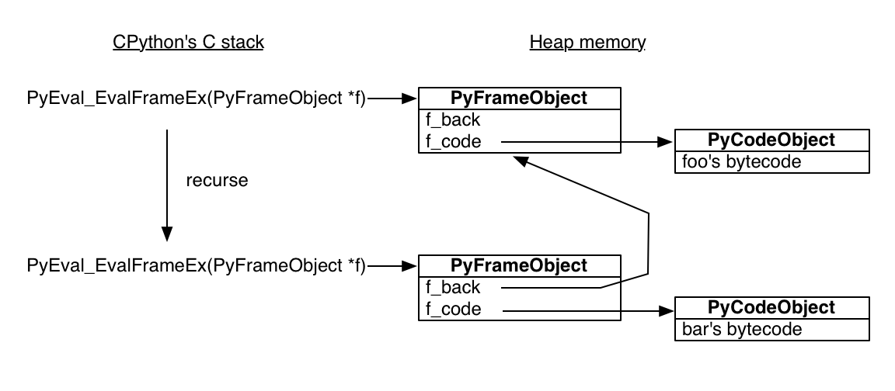
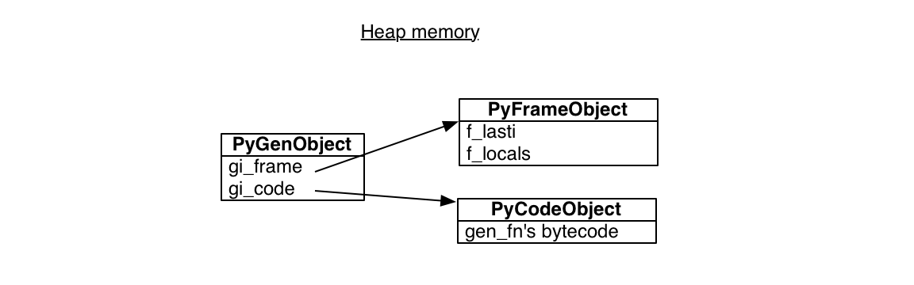
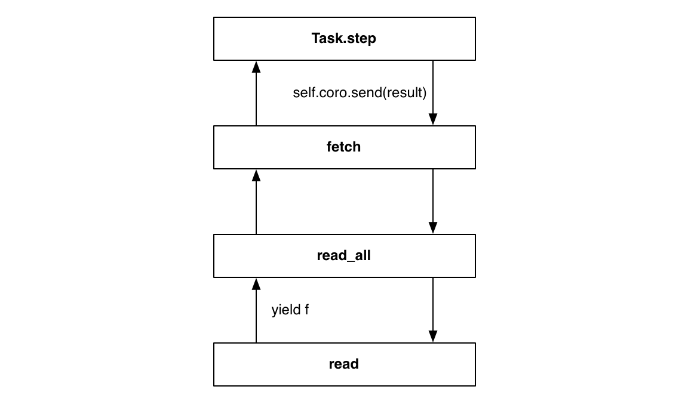
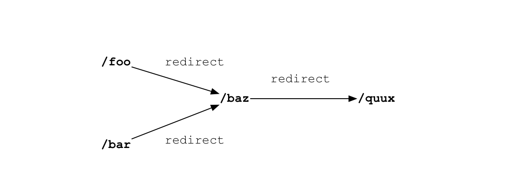

A Web Crawler With asyncio Coroutines
by A. Jesse Jiryu Davis and Guido van Rossum
A. Jesse Jiryu Davis is a staff engineer at MongoDB in New York. He wrote Motor, the async MongoDB Python driver, and he is the lead developer of the MongoDB C Driver and a member of the PyMongo team. He contributes to asyncio and Tornado. He writes at http://emptysqua.re.
Guido van Rossum is the creator of Python, one of the major programming languages on and off the web. The Python community refers to him as the BDFL (Benevolent Dictator For Life), a title straight from a Monty Python skit. Guido’s home on the web is http://www.python.org/~guido/.
Introduction
Classical computer science emphasizes efficient algorithms that complete computations as quickly as possible. But many networked programs spend their time not computing, but holding open many connections that are slow, or have infrequent events. These programs present a very different challenge: to wait for a huge number of network events efficiently. A contemporary approach to this problem is asynchronous I/O, or “async”.
This chapter presents a simple web crawler. The crawler is an archetypal async application because it waits for many responses, but does little computation. The more pages it can fetch at once, the sooner it completes. If it devotes a thread to each in-flight request, then as the number of concurrent requests rises it will run out of memory or other thread-related resource before it runs out of sockets. It avoids the need for threads by using asynchronous I/O.
We present the example in three stages. First, we show an async event loop and sketch a crawler that uses the event loop with callbacks: it is very efficient, but extending it to more complex problems would lead to unmanageable spaghetti code. Second, therefore, we show that Python coroutines are both efficient and extensible. We implement simple coroutines in Python using generator functions. In the third stage, we use the full-featured coroutines from Python’s standard “asyncio” library1, and coordinate them using an async queue.
The Task
A web crawler finds and downloads all pages on a website, perhaps to archive or index them. Beginning with a root URL, it fetches each page, parses it for links to unseen pages, and adds these to a queue. It stops when it fetches a page with no unseen links and the queue is empty.
We can hasten this process by downloading many pages concurrently. As the crawler finds new links, it launches simultaneous fetch operations for the new pages on separate sockets. It parses responses as they arrive, adding new links to the queue. There may come some point of diminishing returns where too much concurrency degrades performance, so we cap the number of concurrent requests, and leave the remaining links in the queue until some in-flight requests complete.
The Traditional Approach
How do we make the crawler concurrent? Traditionally we would create a thread pool. Each thread would be in charge of downloading one page at a time over a socket. For example, to download a page from xkcd.com:
def fetch(url):
sock = socket.socket()
sock.connect(('xkcd.com', 80))
request = 'GET {} HTTP/1.0\r\nHost: xkcd.com\r\n\r\n'.format(url)
sock.send(request.encode('ascii'))
response = b''
chunk = sock.recv(4096)
while chunk:
response += chunk
chunk = sock.recv(4096)
# Page is now downloaded.
links = parse_links(response)
q.add(links)
By default, socket operations are blocking: when the thread calls a method like connect or recv, it pauses until the operation completes.2 Consequently to download many pages at once, we need many threads. A sophisticated application amortizes the cost of thread-creation by keeping idle threads in a thread pool, then checking them out to reuse them for subsequent tasks; it does the same with sockets in a connection pool.
And yet, threads are expensive, and operating systems enforce a variety of hard caps on the number of threads a process, user, or machine may have. On Jesse’s system, a Python thread costs around 50k of memory, and starting tens of thousands of threads causes failures. If we scale up to tens of thousands of simultaneous operations on concurrent sockets, we run out of threads before we run out of sockets. Per-thread overhead or system limits on threads are the bottleneck.
In his influential article “The C10K problem”3, Dan Kegel outlines the limitations of multithreading for I/O concurrency. He begins,
It’s time for web servers to handle ten thousand clients simultaneously, don’t you think? After all, the web is a big place now.
Kegel coined the term “C10K” in 1999. Ten thousand connections sounds dainty now, but the problem has changed only in size, not in kind. Back then, using a thread per connection for C10K was impractical. Now the cap is orders of magnitude higher. Indeed, our toy web crawler would work just fine with threads. Yet for very large scale applications, with hundreds of thousands of connections, the cap remains: there is a limit beyond which most systems can still create sockets, but have run out of threads. How can we overcome this?
Async
Asynchronous I/O frameworks do concurrent operations on a single thread using non-blocking sockets. In our async crawler, we set the socket non-blocking before we begin to connect to the server:
sock = socket.socket()
sock.setblocking(False)
try:
sock.connect(('xkcd.com', 80))
except BlockingIOError:
pass
Irritatingly, a non-blocking socket throws an exception from connect, even when it is working normally. This exception replicates the irritating behavior of the underlying C function, which sets errno to EINPROGRESS to tell you it has begun.
Now our crawler needs a way to know when the connection is established, so it can send the HTTP request. We could simply keep trying in a tight loop:
request = 'GET {} HTTP/1.0\r\nHost: xkcd.com\r\n\r\n'.format(url)
encoded = request.encode('ascii')
while True:
try:
sock.send(encoded)
break # Done.
except OSError as e:
pass
print('sent')
This method not only wastes electricity, but it cannot efficiently await events on multiple sockets. In ancient times, BSD Unix’s solution to this problem was select, a C function that waits for an event to occur on a non-blocking socket or a small array of them. Nowadays the demand for Internet applications with huge numbers of connections has led to replacements like poll, then kqueue on BSD and epoll on Linux. These APIs are similar to select, but perform well with very large numbers of connections.
Python 3.4’s DefaultSelector uses the best select-like function available on your system. To register for notifications about network I/O, we create a non-blocking socket and register it with the default selector:
from selectors import DefaultSelector, EVENT_WRITE
selector = DefaultSelector()
sock = socket.socket()
sock.setblocking(False)
try:
sock.connect(('xkcd.com', 80))
except BlockingIOError:
pass
def connected():
selector.unregister(sock.fileno())
print('connected!')
selector.register(sock.fileno(), EVENT_WRITE, connected)
We disregard the spurious error and call selector.register, passing in the socket’s file descriptor and a constant that expresses what event we are waiting for. To be notified when the connection is established, we pass EVENT_WRITE: that is, we want to know when the socket is “writable”. We also pass a Python function, connected, to run when that event occurs. Such a function is known as a callback.
We process I/O notifications as the selector receives them, in a loop:
def loop():
while True:
events = selector.select()
for event_key, event_mask in events:
callback = event_key.data
callback()
The connected callback is stored as event_key.data, which we retrieve and execute once the non-blocking socket is connected.
Unlike in our fast-spinning loop above, the call to select here pauses, awaiting the next I/O events. Then the loop runs callbacks that are waiting for these events. Operations that have not completed remain pending until some future tick of the event loop.
What have we demonstrated already? We showed how to begin an operation and execute a callback when the operation is ready. An async framework builds on the two features we have shown—non-blocking sockets and the event loop—to run concurrent operations on a single thread.
We have achieved “concurrency” here, but not what is traditionally called “parallelism”. That is, we built a tiny system that does overlapping I/O. It is capable of beginning new operations while others are in flight. It does not actually utilize multiple cores to execute computation in parallel. But then, this system is designed for I/O-bound problems, not CPU-bound ones.4
So our event loop is efficient at concurrent I/O because it does not devote thread resources to each connection. But before we proceed, it is important to correct a common misapprehension that async is faster than multithreading. Often it is not—indeed, in Python, an event loop like ours is moderately slower than multithreading at serving a small number of very active connections. In a runtime without a global interpreter lock, threads would perform even better on such a workload. What asynchronous I/O is right for, is applications with many slow or sleepy connections with infrequent events.5
Programming With Callbacks
With the runty async framework we have built so far, how can we build a web crawler? Even a simple URL-fetcher is painful to write.
We begin with global sets of the URLs we have yet to fetch, and the URLs we have seen:
urls_todo = set(['/'])
seen_urls = set(['/'])
The seen_urls set includes urls_todo plus completed URLs. The two sets are initialized with the root URL “/”.
Fetching a page will require a series of callbacks. The connected callback fires when a socket is connected, and sends a GET request to the server. But then it must await a response, so it registers another callback. If, when that callback fires, it cannot read the full response yet, it registers again, and so on.
Let us collect these callbacks into a Fetcher object. It needs a URL, a socket object, and a place to accumulate the response bytes:
class Fetcher:
def __init__(self, url):
self.response = b'' # Empty array of bytes.
self.url = url
self.sock = None
We begin by calling Fetcher.fetch:
# Method on Fetcher class.
def fetch(self):
self.sock = socket.socket()
self.sock.setblocking(False)
try:
self.sock.connect(('xkcd.com', 80))
except BlockingIOError:
pass
# Register next callback.
selector.register(self.sock.fileno(),
EVENT_WRITE,
self.connected)
The fetch method begins connecting a socket. But notice the method returns before the connection is established. It must return control to the event loop to wait for the connection. To understand why, imagine our whole application was structured so:
# Begin fetching http://xkcd.com/353/
fetcher = Fetcher('/353/')
fetcher.fetch()
while True:
events = selector.select()
for event_key, event_mask in events:
callback = event_key.data
callback(event_key, event_mask)
All event notifications are processed in the event loop when it calls select. Hence fetch must hand control to the event loop, so that the program knows when the socket has connected. Only then does the loop run the connected callback, which was registered at the end of fetch above.
Here is the implementation of connected:
# Method on Fetcher class.
def connected(self, key, mask):
print('connected!')
selector.unregister(key.fd)
request = 'GET {} HTTP/1.0\r\nHost: xkcd.com\r\n\r\n'.format(self.url)
self.sock.send(request.encode('ascii'))
# Register the next callback.
selector.register(key.fd,
EVENT_READ,
self.read_response)
The method sends a GET request. A real application would check the return value of send in case the whole message cannot be sent at once. But our request is small and our application unsophisticated. It blithely calls send, then waits for a response. Of course, it must register yet another callback and relinquish control to the event loop. The next and final callback, read_response, processes the server’s reply:
# Method on Fetcher class.
def read_response(self, key, mask):
global stopped
chunk = self.sock.recv(4096) # 4k chunk size.
if chunk:
self.response += chunk
else:
selector.unregister(key.fd) # Done reading.
links = self.parse_links()
# Python set-logic:
for link in links.difference(seen_urls):
urls_todo.add(link)
Fetcher(link).fetch() # <- New Fetcher.
seen_urls.update(links)
urls_todo.remove(self.url)
if not urls_todo:
stopped = True
The callback is executed each time the selector sees that the socket is “readable”, which could mean two things: the socket has data or it is closed.
The callback asks for up to four kilobytes of data from the socket. If less is ready, chunk contains whatever data is available. If there is more, chunk is four kilobytes long and the socket remains readable, so the event loop runs this callback again on the next tick. When the response is complete, the server has closed the socket and chunk is empty.
The parse_links method, not shown, returns a set of URLs. We start a new fetcher for each new URL, with no concurrency cap. Note a nice feature of async programming with callbacks: we need no mutex around changes to shared data, such as when we add links to seen_urls. There is no preemptive multitasking, so we cannot be interrupted at arbitrary points in our code.
We add a global stopped variable and use it to control the loop:
stopped = False
def loop():
while not stopped:
events = selector.select()
for event_key, event_mask in events:
callback = event_key.data
callback()
Once all pages are downloaded the fetcher stops the global event loop and the program exits.
This example makes async’s problem plain: spaghetti code. We need some way to express a series of computations and I/O operations, and schedule multiple such series of operations to run concurrently. But without threads, a series of operations cannot be collected into a single function: whenever a function begins an I/O operation, it explicitly saves whatever state will be needed in the future, then returns. You are responsible for thinking about and writing this state-saving code.
Let us explain what we mean by that. Consider how simply we fetched a URL on a thread with a conventional blocking socket:
# Blocking version.
def fetch(url):
sock = socket.socket()
sock.connect(('xkcd.com', 80))
request = 'GET {} HTTP/1.0\r\nHost: xkcd.com\r\n\r\n'.format(url)
sock.send(request.encode('ascii'))
response = b''
chunk = sock.recv(4096)
while chunk:
response += chunk
chunk = sock.recv(4096)
# Page is now downloaded.
links = parse_links(response)
q.add(links)
What state does this function remember between one socket operation and the next? It has the socket, a URL, and the accumulating response. A function that runs on a thread uses basic features of the programming language to store this temporary state in local variables, on its stack. The function also has a “continuation”—that is, the code it plans to execute after I/O completes. The runtime remembers the continuation by storing the thread’s instruction pointer. You need not think about restoring these local variables and the continuation after I/O. It is built in to the language.
But with a callback-based async framework, these language features are no help. While waiting for I/O, a function must save its state explicitly, because the function returns and loses its stack frame before I/O completes. In lieu of local variables, our callback-based example stores sock and response as attributes of self, the Fetcher instance. In lieu of the instruction pointer, it stores its continuation by registering the callbacks connected and read_response. As the application’s features grow, so does the complexity of the state we manually save across callbacks. Such onerous bookkeeping makes the coder prone to migraines.
Even worse, what happens if a callback throws an exception, before it schedules the next callback in the chain? Say we did a poor job on the parse_links method and it throws an exception parsing some HTML:
Traceback (most recent call last):
File "loop-with-callbacks.py", line 111, in <module>
loop()
File "loop-with-callbacks.py", line 106, in loop
callback(event_key, event_mask)
File "loop-with-callbacks.py", line 51, in read_response
links = self.parse_links()
File "loop-with-callbacks.py", line 67, in parse_links
raise Exception('parse error')
Exception: parse error
The stack trace shows only that the event loop was running a callback. We do not remember what led to the error. The chain is broken on both ends: we forgot where we were going and whence we came. This loss of context is called “stack ripping”, and in many cases it confounds the investigator. Stack ripping also prevents us from installing an exception handler for a chain of callbacks, the way a “try / except” block wraps a function call and its tree of descendents.6
So, even apart from the long debate about the relative efficiencies of multithreading and async, there is this other debate regarding which is more error-prone: threads are susceptible to data races if you make a mistake synchronizing them, but callbacks are stubborn to debug due to stack ripping.
Coroutines
We entice you with a promise. It is possible to write asynchronous code that combines the efficiency of callbacks with the classic good looks of multithreaded programming. This combination is achieved with a pattern called “coroutines”. Using Python 3.4’s standard asyncio library, and a package called “aiohttp”, fetching a URL in a coroutine is very direct7:
@asyncio.coroutine
def fetch(self, url):
response = yield from self.session.get(url)
body = yield from response.read()
It is also scalable. Compared to the 50k of memory per thread and the operating system’s hard limits on threads, a Python coroutine takes barely 3k of memory on Jesse’s system. Python can easily start hundreds of thousands of coroutines.
The concept of a coroutine, dating to the elder days of computer science, is simple: it is a subroutine that can be paused and resumed. Whereas threads are preemptively multitasked by the operating system, coroutines multitask cooperatively: they choose when to pause, and which coroutine to run next.
There are many implementations of coroutines; even in Python there are several. The coroutines in the standard “asyncio” library in Python 3.4 are built upon generators, a Future class, and the “yield from” statement. Starting in Python 3.5, coroutines are a native feature of the language itself8; however, understanding coroutines as they were first implemented in Python 3.4, using pre-existing language facilities, is the foundation to tackle Python 3.5’s native coroutines.
To explain Python 3.4’s generator-based coroutines, we will engage in an exposition of generators and how they are used as coroutines in asyncio, and trust you will enjoy reading it as much as we enjoyed writing it. Once we have explained generator-based coroutines, we shall use them in our async web crawler.
How Python Generators Work
Before you grasp Python generators, you have to understand how regular Python functions work. Normally, when a Python function calls a subroutine, the subroutine retains control until it returns, or throws an exception. Then control returns to the caller:
>>> def foo():
... bar()
...
>>> def bar():
... pass
The standard Python interpreter is written in C. The C function that executes a Python function is called, mellifluously, PyEval_EvalFrameEx. It takes a Python stack frame object and evaluates Python bytecode in the context of the frame. Here is the bytecode for foo:
>>> import dis
>>> dis.dis(foo)
2 0 LOAD_GLOBAL 0 (bar)
3 CALL_FUNCTION 0 (0 positional, 0 keyword pair)
6 POP_TOP
7 LOAD_CONST 0 (None)
10 RETURN_VALUE
The foo function loads bar onto its stack and calls it, then pops its return value from the stack, loads None onto the stack, and returns None.
When PyEval_EvalFrameEx encounters the CALL_FUNCTION bytecode, it creates a new Python stack frame and recurses: that is, it calls PyEval_EvalFrameEx recursively with the new frame, which is used to execute bar.
It is crucial to understand that Python stack frames are allocated in heap memory! The Python interpreter is a normal C program, so its stack frames are normal stack frames. But the Python stack frames it manipulates are on the heap. Among other surprises, this means a Python stack frame can outlive its function call. To see this interactively, save the current frame from within bar:
>>> import inspect
>>> frame = None
>>> def foo():
... bar()
...
>>> def bar():
... global frame
... frame = inspect.currentframe()
...
>>> foo()
>>> # The frame was executing the code for 'bar'.
>>> frame.f_code.co_name
'bar'
>>> # Its back pointer refers to the frame for 'foo'.
>>> caller_frame = frame.f_back
>>> caller_frame.f_code.co_name
'foo'

The stage is now set for Python generators, which use the same building blocks—code objects and stack frames—to marvelous effect.This is a generator function:
>>> def gen_fn():
... result = yield 1
... print('result of yield: {}'.format(result))
... result2 = yield 2
... print('result of 2nd yield: {}'.format(result2))
... return 'done'
...
When Python compiles gen_fn to bytecode, it sees the yield statement and knows that gen_fn is a generator function, not a regular one. It sets a flag to remember this fact:
>>> # The generator flag is bit position 5.
>>> generator_bit = 1 << 5
>>> bool(gen_fn.__code__.co_flags & generator_bit)
True
When you call a generator function, Python sees the generator flag, and it does not actually run the function. Instead, it creates a generator:
>>> gen = gen_fn()
>>> type(gen)
<class 'generator'>
A Python generator encapsulates a stack frame plus a reference to some code, the body of gen_fn:
>>> gen.gi_code.co_name
'gen_fn'
All generators from calls to gen_fn point to this same code. But each has its own stack frame. This stack frame is not on any actual stack, it sits in heap memory waiting to be used:

The frame has a “last instruction” pointer, the instruction it executed most recently. In the beginning, the last instruction pointer is -1, meaning the generator has not begun:>>> gen.gi_frame.f_lasti
-1
When we call send, the generator reaches its first yield, and pauses. The return value of send is 1, since that is what gen passes to the yield expression:
>>> gen.send(None)
1
The generator’s instruction pointer is now 3 bytecodes from the start, part way through the 56 bytes of compiled Python:
>>> gen.gi_frame.f_lasti
3
>>> len(gen.gi_code.co_code)
56
The generator can be resumed at any time, from any function, because its stack frame is not actually on the stack: it is on the heap. Its position in the call hierarchy is not fixed, and it need not obey the first-in, last-out order of execution that regular functions do. It is liberated, floating free like a cloud.
We can send the value “hello” into the generator and it becomes the result of the yield expression, and the generator continues until it yields 2:
>>> gen.send('hello')
result of yield: hello
2
Its stack frame now contains the local variable result:
>>> gen.gi_frame.f_locals
{'result': 'hello'}
Other generators created from gen_fn will have their own stack frames and local variables.
When we call send again, the generator continues from its second yield, and finishes by raising the special StopIteration exception:
>>> gen.send('goodbye')
result of 2nd yield: goodbye
Traceback (most recent call last):
File "<input>", line 1, in <module>
StopIteration: done
The exception has a value, which is the return value of the generator: the string "done".
Building Coroutines With Generators
So a generator can pause, and it can be resumed with a value, and it has a return value. Sounds like a good primitive upon which to build an async programming model, without spaghetti callbacks! We want to build a “coroutine”: a routine that is cooperatively scheduled with other routines in the program. Our coroutines will be a simplified version of those in Python’s standard “asyncio” library. As in asyncio, we will use generators, futures, and the “yield from” statement.
First we need a way to represent some future result that a coroutine is waiting for. A stripped-down version:
class Future:
def __init__(self):
self.result = None
self._callbacks = []
def add_done_callback(self, fn):
self._callbacks.append(fn)
def set_result(self, result):
self.result = result
for fn in self._callbacks:
fn(self)
A future is initially “pending”. It is “resolved” by a call to set_result.9
Let us adapt our fetcher to use futures and coroutines. We wrote fetch with a callback:
class Fetcher:
def fetch(self):
self.sock = socket.socket()
self.sock.setblocking(False)
try:
self.sock.connect(('xkcd.com', 80))
except BlockingIOError:
pass
selector.register(self.sock.fileno(),
EVENT_WRITE,
self.connected)
def connected(self, key, mask):
print('connected!')
# And so on....
The fetch method begins connecting a socket, then registers the callback, connected, to be executed when the socket is ready. Now we can combine these two steps into one coroutine:
def fetch(self):
sock = socket.socket()
sock.setblocking(False)
try:
sock.connect(('xkcd.com', 80))
except BlockingIOError:
pass
f = Future()
def on_connected():
f.set_result(None)
selector.register(sock.fileno(),
EVENT_WRITE,
on_connected)
yield f
selector.unregister(sock.fileno())
print('connected!')
Now fetch is a generator function, rather than a regular one, because it contains a yield statement. We create a pending future, then yield it to pause fetch until the socket is ready. The inner function on_connected resolves the future.
But when the future resolves, what resumes the generator? We need a coroutine driver. Let us call it “task”:
class Task:
def __init__(self, coro):
self.coro = coro
f = Future()
f.set_result(None)
self.step(f)
def step(self, future):
try:
next_future = self.coro.send(future.result)
except StopIteration:
return
next_future.add_done_callback(self.step)
# Begin fetching http://xkcd.com/353/
fetcher = Fetcher('/353/')
Task(fetcher.fetch())
loop()
The task starts the fetch generator by sending None into it. Then fetch runs until it yields a future, which the task captures as next_future. When the socket is connected, the event loop runs the callback on_connected, which resolves the future, which calls step, which resumes fetch.
Factoring Coroutines With yield from
Once the socket is connected, we send the HTTP GET request and read the server response. These steps need no longer be scattered among callbacks; we gather them into the same generator function:
def fetch(self):
# ... connection logic from above, then:
sock.send(request.encode('ascii'))
while True:
f = Future()
def on_readable():
f.set_result(sock.recv(4096))
selector.register(sock.fileno(),
EVENT_READ,
on_readable)
chunk = yield f
selector.unregister(sock.fileno())
if chunk:
self.response += chunk
else:
# Done reading.
break
This code, which reads a whole message from a socket, seems generally useful. How can we factor it from fetch into a subroutine? Now Python 3’s celebrated yield from takes the stage. It lets one generator delegate to another.
To see how, let us return to our simple generator example:
>>> def gen_fn():
... result = yield 1
... print('result of yield: {}'.format(result))
... result2 = yield 2
... print('result of 2nd yield: {}'.format(result2))
... return 'done'
...
To call this generator from another generator, delegate to it with yield from:
>>> # Generator function:
>>> def caller_fn():
... gen = gen_fn()
... rv = yield from gen
... print('return value of yield-from: {}'
... .format(rv))
...
>>> # Make a generator from the
>>> # generator function.
>>> caller = caller_fn()
The caller generator acts as if it were gen, the generator it is delegating to:
>>> caller.send(None)
1
>>> caller.gi_frame.f_lasti
15
>>> caller.send('hello')
result of yield: hello
2
>>> caller.gi_frame.f_lasti # Hasn't advanced.
15
>>> caller.send('goodbye')
result of 2nd yield: goodbye
return value of yield-from: done
Traceback (most recent call last):
File "<input>", line 1, in <module>
StopIteration
While caller yields from gen, caller does not advance. Notice that its instruction pointer remains at 15, the site of its yield from statement, even while the inner generator gen advances from one yield statement to the next.10 From our perspective outside caller, we cannot tell if the values it yields are from caller or from the generator it delegates to. And from inside gen, we cannot tell if values are sent in from caller or from outside it. The yield from statement is a frictionless channel, through which values flow in and out of gen until gen completes.
A coroutine can delegate work to a sub-coroutine with yield from and receive the result of the work. Notice, above, that caller printed “return value of yield-from: done”. When gen completed, its return value became the value of the yield from statement in caller:
rv = yield from gen
Earlier, when we criticized callback-based async programming, our most strident complaint was about “stack ripping”: when a callback throws an exception, the stack trace is typically useless. It only shows that the event loop was running the callback, not why. How do coroutines fare?
>>> def gen_fn():
... raise Exception('my error')
>>> caller = caller_fn()
>>> caller.send(None)
Traceback (most recent call last):
File "<input>", line 1, in <module>
File "<input>", line 3, in caller_fn
File "<input>", line 2, in gen_fn
Exception: my error
This is much more useful! The stack trace shows caller_fn was delegating to gen_fn when it threw the error. Even more comforting, we can wrap the call to a sub-coroutine in an exception handler, the same is with normal subroutines:
>>> def gen_fn():
... yield 1
... raise Exception('uh oh')
...
>>> def caller_fn():
... try:
... yield from gen_fn()
... except Exception as exc:
... print('caught {}'.format(exc))
...
>>> caller = caller_fn()
>>> caller.send(None)
1
>>> caller.send('hello')
caught uh oh
So we factor logic with sub-coroutines just like with regular subroutines. Let us factor some useful sub-coroutines from our fetcher. We write a read coroutine to receive one chunk:
def read(sock):
f = Future()
def on_readable():
f.set_result(sock.recv(4096))
selector.register(sock.fileno(), EVENT_READ, on_readable)
chunk = yield f # Read one chunk.
selector.unregister(sock.fileno())
return chunk
We build on read with a read_all coroutine that receives a whole message:
def read_all(sock):
response = []
# Read whole response.
chunk = yield from read(sock)
while chunk:
response.append(chunk)
chunk = yield from read(sock)
return b''.join(response)
If you squint the right way, the yield from statements disappear and these look like conventional functions doing blocking I/O. But in fact, read and read_all are coroutines. Yielding from read pauses read_all until the I/O completes. While read_all is paused, asyncio’s event loop does other work and awaits other I/O events; read_all is resumed with the result of read on the next loop tick once its event is ready.
At the stack’s root, fetch calls read_all:
class Fetcher:
def fetch(self):
# ... connection logic from above, then:
sock.send(request.encode('ascii'))
self.response = yield from read_all(sock)
Miraculously, the Task class needs no modification. It drives the outer fetch coroutine just the same as before:
Task(fetcher.fetch())
loop()
When read yields a future, the task receives it through the channel of yield from statements, precisely as if the future were yielded directly from fetch. When the loop resolves a future, the task sends its result into fetch, and the value is received by read, exactly as if the task were driving read directly:

To perfect our coroutine implementation, we polish out one mar: our code usesyield when it waits for a future, but yield from when it delegates to a sub-coroutine. It would be more refined if we used yield from whenever a coroutine pauses. Then a coroutine need not concern itself with what type of thing it awaits.
We take advantage of the deep correspondence in Python between generators and iterators. Advancing a generator is, to the caller, the same as advancing an iterator. So we make our Future class iterable by implementing a special method:
# Method on Future class.
def __iter__(self):
# Tell Task to resume me here.
yield self
return self.result
The future’s __iter__ method is a coroutine that yields the future itself. Now when we replace code like this:
# f is a Future.
yield f
…with this:
# f is a Future.
yield from f
…the outcome is the same! The driving Task receives the future from its call to send, and when the future is resolved it sends the new result back into the coroutine.
What is the advantage of using yield from everywhere? Why is that better than waiting for futures with yield and delegating to sub-coroutines with yield from? It is better because now, a method can freely change its implementation without affecting the caller: it might be a normal method that returns a future that will resolve to a value, or it might be a coroutine that contains yield from statements and returns a value. In either case, the caller need only yield from the method in order to wait for the result.
Gentle reader, we have reached the end of our enjoyable exposition of coroutines in asyncio. We peered into the machinery of generators, and sketched an implementation of futures and tasks. We outlined how asyncio attains the best of both worlds: concurrent I/O that is more efficient than threads and more legible than callbacks. Of course, the real asyncio is much more sophisticated than our sketch. The real framework addresses zero-copy I/O, fair scheduling, exception handling, and an abundance of other features.
To an asyncio user, coding with coroutines is much simpler than you saw here. In the code above we implemented coroutines from first principles, so you saw callbacks, tasks, and futures. You even saw non-blocking sockets and the call to select. But when it comes time to build an application with asyncio, none of this appears in your code. As we promised, you can now sleekly fetch a URL:
@asyncio.coroutine
def fetch(self, url):
response = yield from self.session.get(url)
body = yield from response.read()
Satisfied with this exposition, we return to our original assignment: to write an async web crawler, using asyncio.
Coordinating Coroutines
We began by describing how we want our crawler to work. Now it is time to implement it with asyncio coroutines.
Our crawler will fetch the first page, parse its links, and add them to a queue. After this it fans out across the website, fetching pages concurrently. But to limit load on the client and server, we want some maximum number of workers to run, and no more. Whenever a worker finishes fetching a page, it should immediately pull the next link from the queue. We will pass through periods when there is not enough work to go around, so some workers must pause. But when a worker hits a page rich with new links, then the queue suddenly grows and any paused workers should wake and get cracking. Finally, our program must quit once its work is done.
Imagine if the workers were threads. How would we express the crawler’s algorithm? We could use a synchronized queue11 from the Python standard library. Each time an item is put in the queue, the queue increments its count of “tasks”. Worker threads call task_done after completing work on an item. The main thread blocks on Queue.join until each item put in the queue is matched by a task_done call, then it exits.
Coroutines use the exact same pattern with an asyncio queue! First we import it12:
try:
from asyncio import JoinableQueue as Queue
except ImportError:
# In Python 3.5, asyncio.JoinableQueue is
# merged into Queue.
from asyncio import Queue
We collect the workers’ shared state in a crawler class, and write the main logic in its crawl method. We start crawl on a coroutine and run asyncio’s event loop until crawl finishes:
loop = asyncio.get_event_loop()
crawler = crawling.Crawler('http://xkcd.com',
max_redirect=10)
loop.run_until_complete(crawler.crawl())
The crawler begins with a root URL and max_redirect, the number of redirects it is willing to follow to fetch any one URL. It puts the pair (URL, max_redirect) in the queue. (For the reason why, stay tuned.)
class Crawler:
def __init__(self, root_url, max_redirect):
self.max_tasks = 10
self.max_redirect = max_redirect
self.q = Queue()
self.seen_urls = set()
# aiohttp's ClientSession does connection pooling and
# HTTP keep-alives for us.
self.session = aiohttp.ClientSession(loop=loop)
# Put (URL, max_redirect) in the queue.
self.q.put((root_url, self.max_redirect))
The number of unfinished tasks in the queue is now one. Back in our main script, we launch the event loop and the crawl method:
loop.run_until_complete(crawler.crawl())
The crawl coroutine kicks off the workers. It is like a main thread: it blocks on join until all tasks are finished, while the workers run in the background.
@asyncio.coroutine
def crawl(self):
"""Run the crawler until all work is done."""
workers = [asyncio.Task(self.work())
for _ in range(self.max_tasks)]
# When all work is done, exit.
yield from self.q.join()
for w in workers:
w.cancel()
If the workers were threads we might not wish to start them all at once. To avoid creating expensive threads until it is certain they are necessary, a thread pool typically grows on demand. But coroutines are cheap, so we simply start the maximum number allowed.
It is interesting to note how we shut down the crawler. When the join future resolves, the worker tasks are alive but suspended: they wait for more URLs but none come. So, the main coroutine cancels them before exiting. Otherwise, as the Python interpreter shuts down and calls all objects’ destructors, living tasks cry out:
ERROR:asyncio:Task was destroyed but it is pending!
And how does cancel work? Generators have a feature we have not yet shown you. You can throw an exception into a generator from outside:
>>> gen = gen_fn()
>>> gen.send(None) # Start the generator as usual.
1
>>> gen.throw(Exception('error'))
Traceback (most recent call last):
File "<input>", line 3, in <module>
File "<input>", line 2, in gen_fn
Exception: error
The generator is resumed by throw, but it is now raising an exception. If no code in the generator’s call stack catches it, the exception bubbles back up to the top. So to cancel a task’s coroutine:
# Method of Task class.
def cancel(self):
self.coro.throw(CancelledError)
Wherever the generator is paused, at some yield from statement, it resumes and throws an exception. We handle cancellation in the task’s step method:
# Method of Task class.
def step(self, future):
try:
next_future = self.coro.send(future.result)
except CancelledError:
self.cancelled = True
return
except StopIteration:
return
next_future.add_done_callback(self.step)
Now the task knows it is cancelled, so when it is destroyed it does not rage against the dying of the light.
Once crawl has canceled the workers, it exits. The event loop sees that the coroutine is complete (we shall see how later), and it too exits:
loop.run_until_complete(crawler.crawl())
The crawl method comprises all that our main coroutine must do. It is the worker coroutines that get URLs from the queue, fetch them, and parse them for new links. Each worker runs the work coroutine independently:
@asyncio.coroutine
def work(self):
while True:
url, max_redirect = yield from self.q.get()
# Download page and add new links to self.q.
yield from self.fetch(url, max_redirect)
self.q.task_done()
Python sees that this code contains yield from statements, and compiles it into a generator function. So in crawl, when the main coroutine calls self.work ten times, it does not actually execute this method: it only creates ten generator objects with references to this code. It wraps each in a Task. The Task receives each future the generator yields, and drives the generator by calling send with each future’s result when the future resolves. Because the generators have their own stack frames, they run independently, with separate local variables and instruction pointers.
The worker coordinates with its fellows via the queue. It waits for new URLs with:
url, max_redirect = yield from self.q.get()
The queue’s get method is itself a coroutine: it pauses until someone puts an item in the queue, then resumes and returns the item.
Incidentally, this is where the worker will be paused at the end of the crawl, when the main coroutine cancels it. From the coroutine’s perspective, its last trip around the loop ends when yield from raises a CancelledError.
When a worker fetches a page it parses the links and puts new ones in the queue, then calls task_done to decrement the counter. Eventually, a worker fetches a page whose URLs have all been fetched already, and there is also no work left in the queue. Thus this worker’s call to task_done decrements the counter to zero. Then crawl, which is waiting for the queue’s join method, is unpaused and finishes.
We promised to explain why the items in the queue are pairs, like:
# URL to fetch, and the number of redirects left.
('http://xkcd.com/353', 10)
New URLs have ten redirects remaining. Fetching this particular URL results in a redirect to a new location with a trailing slash. We decrement the number of redirects remaining, and put the next location in the queue:
# URL with a trailing slash. Nine redirects left.
('http://xkcd.com/353/', 9)
The aiohttp package we use would follow redirects by default and give us the final response. We tell it not to, however, and handle redirects in the crawler, so it can coalesce redirect paths that lead to the same destination: if we have already seen this URL, it is in self.seen_urls and we have already started on this path from a different entry point:

The crawler fetches “foo” and sees it redirects to “baz”, so it adds “baz” to the queue and toseen_urls. If the next page it fetches is “bar”, which
also redirects to “baz”, the fetcher does not enqueue “baz” again. If the
response is a page, rather than a redirect, fetch parses it for links and
puts new ones in the queue.
@asyncio.coroutine
def fetch(self, url, max_redirect):
# Handle redirects ourselves.
response = yield from self.session.get(
url, allow_redirects=False)
try:
if is_redirect(response):
if max_redirect > 0:
next_url = response.headers['location']
if next_url in self.seen_urls:
# We have been down this path before.
return
# Remember we have seen this URL.
self.seen_urls.add(next_url)
# Follow the redirect. One less redirect remains.
self.q.put_nowait((next_url, max_redirect - 1))
else:
links = yield from self.parse_links(response)
# Python set-logic:
for link in links.difference(self.seen_urls):
self.q.put_nowait((link, self.max_redirect))
self.seen_urls.update(links)
finally:
# Return connection to pool.
yield from response.release()
If this were multithreaded code, it would be lousy with race conditions. For example, the worker checks if a link is in seen_urls, and if not the worker puts it in the queue and adds it to seen_urls. If it were interrupted between the two operations, then another worker might parse the same link from a different page, also observe that it is not in seen_urls, and also add it to the queue. Now that same link is in the queue twice, leading (at best) to duplicated work and wrong statistics.
However, a coroutine is only vulnerable to interruption at yield from statements. This is a key difference that makes coroutine code far less prone to races than multithreaded code: multithreaded code must enter a critical section explicitly, by grabbing a lock, otherwise it is interruptible. A Python coroutine is uninterruptible by default, and only cedes control when it explicitly yields.
We no longer need a fetcher class like we had in the callback-based program. That class was a workaround for a deficiency of callbacks: they need some place to store state while waiting for I/O, since their local variables are not preserved across calls. But the fetch coroutine can store its state in local variables like a regular function does, so there is no more need for a class.
When fetch finishes processing the server response it returns to the caller, work. The work method calls task_done on the queue and then gets the next URL from the queue to be fetched.
When fetch puts new links in the queue it increments the count of unfinished tasks and keeps the main coroutine, which is waiting for q.join, paused. If, however, there are no unseen links and this was the last URL in the queue, then when work calls task_done the count of unfinished tasks falls to zero. That event unpauses join and the main coroutine completes.
The queue code that coordinates the workers and the main coroutine is like this13:
class Queue:
def __init__(self):
self._join_future = Future()
self._unfinished_tasks = 0
# ... other initialization ...
def put_nowait(self, item):
self._unfinished_tasks += 1
# ... store the item ...
def task_done(self):
self._unfinished_tasks -= 1
if self._unfinished_tasks == 0:
self._join_future.set_result(None)
@asyncio.coroutine
def join(self):
if self._unfinished_tasks > 0:
yield from self._join_future
The main coroutine, crawl, yields from join. So when the last worker decrements the count of unfinished tasks to zero, it signals crawl to resume, and finish.
The ride is almost over. Our program began with the call to crawl:
loop.run_until_complete(self.crawler.crawl())
How does the program end? Since crawl is a generator function, calling it returns a generator. To drive the generator, asyncio wraps it in a task:
class EventLoop:
def run_until_complete(self, coro):
"""Run until the coroutine is done."""
task = Task(coro)
task.add_done_callback(stop_callback)
try:
self.run_forever()
except StopError:
pass
class StopError(BaseException):
"""Raised to stop the event loop."""
def stop_callback(future):
raise StopError
When the task completes, it raises StopError, which the loop uses as a signal that it has arrived at normal completion.
But what’s this? The task has methods called add_done_callback and result? You might think that a task resembles a future. Your instinct is correct. We must admit a detail about the Task class we hid from you: a task is a future.
class Task(Future):
"""A coroutine wrapped in a Future."""
Normally a future is resolved by someone else calling set_result on it. But a task resolves itself when its coroutine stops. Remember from our earlier exploration of Python generators that when a generator returns, it throws the special StopIteration exception:
# Method of class Task.
def step(self, future):
try:
next_future = self.coro.send(future.result)
except CancelledError:
self.cancelled = True
return
except StopIteration as exc:
# Task resolves itself with coro's return
# value.
self.set_result(exc.value)
return
next_future.add_done_callback(self.step)
So when the event loop calls task.add_done_callback(stop_callback), it prepares to be stopped by the task. Here is run_until_complete again:
# Method of event loop.
def run_until_complete(self, coro):
task = Task(coro)
task.add_done_callback(stop_callback)
try:
self.run_forever()
except StopError:
pass
When the task catches StopIteration and resolves itself, the callback raises StopError from within the loop. The loop stops and the call stack is unwound to run_until_complete. Our program is finished.
Conclusion
Increasingly often, modern programs are I/O-bound instead of CPU-bound. For such programs, Python threads are the worst of both worlds: the global interpreter lock prevents them from actually executing computations in parallel, and preemptive switching makes them prone to races. Async is often the right pattern. But as callback-based async code grows, it tends to become a dishevelled mess. Coroutines are a tidy alternative. They factor naturally into subroutines, with sane exception handling and stack traces.
If we squint so that the yield from statements blur, a coroutine looks like a thread doing traditional blocking I/O. We can even coordinate coroutines with classic patterns from multi-threaded programming. There is no need for reinvention. Thus, compared to callbacks, coroutines are an inviting idiom to the coder experienced with multithreading.
But when we open our eyes and focus on the yield from statements, we see they mark points when the coroutine cedes control and allows others to run. Unlike threads, coroutines display where our code can be interrupted and where it cannot. In his illuminating essay “Unyielding”14, Glyph Lefkowitz writes, “Threads make local reasoning difficult, and local reasoning is perhaps the most important thing in software development.” Explicitly yielding, however, makes it possible to “understand the behavior (and thereby, the correctness) of a routine by examining the routine itself rather than examining the entire system.”
This chapter was written during a renaissance in the history of Python and async. Generator-based coroutines, whose devising you have just learned, were released in the “asyncio” module with Python 3.4 in March 2014. In September 2015, Python 3.5 was released with coroutines built in to the language itself. These native coroutinesare declared with the new syntax “async def”, and instead of “yield from”, they use the new “await” keyword to delegate to a coroutine or wait for a Future.
Despite these advances, the core ideas remain. Python’s new native coroutines will be syntactically distinct from generators but work very similarly; indeed, they will share an implementation within the Python interpreter. Task, Future, and the event loop will continue to play their roles in asyncio.
Now that you know how asyncio coroutines work, you can largely forget the details. The machinery is tucked behind a dapper interface. But your grasp of the fundamentals empowers you to code correctly and efficiently in modern async environments.
-
Guido introduced the standard asyncio library, called “Tulip” then, at PyCon 2013. ↩
-
Even calls to
sendcan block, if the recipient is slow to acknowledge outstanding messages and the system’s buffer of outgoing data is full. ↩ -
Python’s global interpreter lock prohibits running Python code in parallel in one process anyway. Parallelizing CPU-bound algorithms in Python requires multiple processes, or writing the parallel portions of the code in C. But that is a topic for another day. ↩
-
Jesse listed indications and contraindications for using async in “What Is Async, How Does It Work, And When Should I Use It?”:. Mike Bayer compared the throughput of asyncio and multithreading for different workloads in “Asynchronous Python and Databases”: ↩
-
For a complex solution to this problem, see http://www.tornadoweb.org/en/stable/stack_context.html ↩
-
The
@asyncio.coroutinedecorator is not magical. In fact, if it decorates a generator function and thePYTHONASYNCIODEBUGenvironment variable is not set, the decorator does practically nothing. It just sets an attribute,_is_coroutine, for the convenience of other parts of the framework. It is possible to use asyncio with bare generators not decorated with@asyncio.coroutineat all. ↩ -
Python 3.5’s built-in coroutines are described in PEP 492, “Coroutines with async and await syntax.” ↩
-
This future has many deficiencies. For example, once this future is resolved, a coroutine that yields it should resume immediately instead of pausing, but with our code it does not. See asyncio’s Future class for a complete implementation. ↩
-
In fact, this is exactly how “yield from” works in CPython. A function increments its instruction pointer before executing each statement. But after the outer generator executes “yield from”, it subtracts 1 from its instruction pointer to keep itself pinned at the “yield from” statement. Then it yields to its caller. The cycle repeats until the inner generator throws
StopIteration, at which point the outer generator finally allows itself to advance to the next instruction. ↩ -
The actual
asyncio.Queueimplementation uses anasyncio.Eventin place of the Future shown here. The difference is an Event can be reset, whereas a Future cannot transition from resolved back to pending. ↩